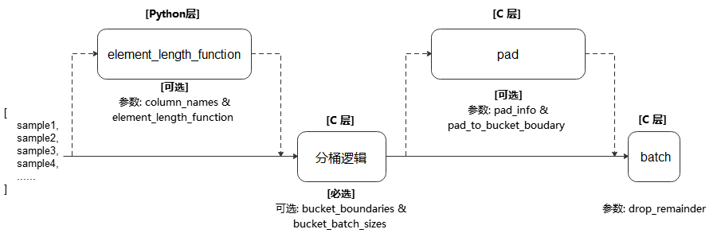

mindspore.dataset.ArgoverseDataset
- class mindspore.dataset.ArgoverseDataset(data_dir, column_names='graph', shuffle=None, num_parallel_workers=1, python_multiprocessing=True, perf_mode=True)[源代码]
加载argoverse数据集并进行图（Graph）初始化。
Argoverse数据集是自动驾驶领域的公共数据集，当前实现的 ArgoverseDataset 主要用于加载argoverse数据集中运动预测（Motion Forecasting）场景的数据集，具体信息可访问官网了解： https://www.argoverse.org/av1.html#download-link。
- 参数：
data_dir (str) - 加载数据集的目录，这里包含原始格式的数据，并将在 process 方法中被加载。
column_names (Union[str, list[str]]，可选) - dataset包含的单个列名或多个列名组成的列表，默认值：’Graph’。当实现类似 __getitem__ 等方法时，列名的数量应该等于该方法中返回数据的条数，如下述示例，建议初始化时明确它的取值如：column_names=[“edge_index”, “x”, “y”, “cluster”, “valid_len”, “time_step_len”]。
num_parallel_workers (int, 可选) - 指定读取数据的工作进程数/线程数（由参数 python_multiprocessing 决定当前为多进程模式或多线程模式），默认值：1。
shuffle (bool，可选) - 是否混洗数据集。当实现的Dataset带有可随机访问属性（ __getitem__ ）时，才可以指定该参数。默认值：None。
python_multiprocessing (bool，可选) - 启用Python多进程模式加速运算，默认值：True。当传入 source 的Python对象的计算量很大时，开启此选项可能会有较好效果。
perf_mode (bool，可选) - 遍历创建的dataset对象时获得更高性能的模式（在此过程中将调用 __getitem__ 方法）。默认值：True，将Graph的所有数据（如边的索引、节点特征和图的特征）都作为图特征进行存储。
- add_sampler(new_sampler)
为当前数据集添加子采样器。
- 参数：
new_sampler (Sampler) - 待添加的子采样器。
样例：
>>> new_sampler = ds.DistributedSampler(10, 2) >>> dataset.add_sampler(new_sampler) # dataset is an instance of Dataset
- apply(apply_func)
对数据集对象执行给定操作函数。
- 参数：
apply_func (function) - 数据集处理函数，要求该函数的输入是一个 Dataset 对象，返回的是处理后的 Dataset 对象。
- 返回：
执行了给定操作函数的数据集对象。
- 异常：
TypeError - apply_func 的类型不是函数。
TypeError - apply_func 未返回 Dataset 对象。
样例：
>>> # dataset is an instance object of Dataset >>> >>> # Declare an apply_func function which returns a Dataset object >>> def apply_func(data): ... data = data.batch(2) ... return data >>> >>> # Use apply to call apply_func >>> dataset = dataset.apply(apply_func)
- batch(batch_size, drop_remainder=False, num_parallel_workers=None, per_batch_map=None, input_columns=None, output_columns=None, column_order=None, pad_info=None, python_multiprocessing=False, max_rowsize=16)
将数据集中连续 batch_size 条数据合并为一个批处理数据。
batch 操作要求每列中的数据具有相同的shape。如果指定了参数 per_batch_map ，该参数将作用于批处理后的数据。
Note
执行 repeat 和 batch 操作的先后顺序，会影响批处理数据的数量及 per_batch_map 的结果。建议在 batch 操作完成后执行 repeat 操作。
- 参数：
batch_size (Union[int, Callable]) - 指定每个批处理数据包含的数据条目。 如果 batch_size 为整型，则直接表示每个批处理数据大小； 如果为可调用对象，则可以通过自定义行为动态指定每个批处理数据大小，要求该可调用对象接收一个参数BatchInfo，返回一个整形代表批处理大小，用法请参考样例（3）。
drop_remainder (bool, 可选) - 当最后一个批处理数据包含的数据条目小于 batch_size 时，是否将该批处理丢弃，不传递给下一个操作。默认值：False，不丢弃。
num_parallel_workers (int, 可选) - 指定 batch 操作的并发进程数/线程数（由参数 python_multiprocessing 决定当前为多进程模式或多线程模式）。 默认值：None，使用mindspore.dataset.config中配置的线程数。
per_batch_map (Callable[[List[numpy.ndarray], …, List[numpy.ndarray], BatchInfo], (List[numpy.ndarray], …, List[numpy.ndarray])], 可选) - 可调用对象， 以(list[numpy.ndarray], …, list[numpy.ndarray], BatchInfo)作为输入参数， 处理后返回(list[numpy.ndarray], list[numpy.ndarray],…)作为新的数据列。输入参数中每个list[numpy.ndarray]代表给定数据列中的一批numpy.ndarray， list[numpy.ndarray]的个数应与 input_columns 中传入列名的数量相匹配，在返回的(list[numpy.ndarray], list[numpy.ndarray], …)中， list[numpy.ndarray]的个数应与输入相同，如果输出列数与输入列数不一致，则需要指定 output_columns。该可调用对象的最后一个输入参数始终是BatchInfo， 用于获取数据集的信息，用法参考样例（2）。
input_columns (Union[str, list[str]], 可选) - 指定 batch 操作的输入数据列。 如果 per_batch_map 不为None，列表中列名的个数应与 per_batch_map 中包含的列数匹配。默认值：None，不指定。
output_columns (Union[str, list[str]], 可选) - 指定 batch 操作的输出数据列。如果输入数据列与输入数据列的长度不相等，则必须指定此参数。 此列表中列名的数量必须与 per_batch_map 方法的返回值数量相匹配。默认值：None，输出列将与输入列具有相同的名称。
column_order (Union[str, list[str]], 可选) - 指定传递到下一个数据集操作的数据列顺序。 如果 input_column 长度不等于 output_column 长度，则此参数必须指定。 注意：列名不限定在 input_columns 和 output_columns 中指定的列，也可以是上一个操作输出的未被处理的数据列，详细可参阅使用样例（4）。默认值：None，按照原输入顺序排列。
pad_info (dict, 可选) - 对给定数据列进行填充。通过传入dict来指定列信息与填充信息，例如 pad_info={“col1”:([224,224],0)} ， 则将列名为”col1”的数据列扩充到shape为(224, 224)的Tensor，缺失的值使用0填充。默认值：None，不填充。
python_multiprocessing (bool, 可选) - 启动Python多进程模式并行执行 per_batch_map 。如果 per_batch_map 的计算量很大，此选项可能会很有用。默认值：False，不启用多进程。
max_rowsize (int, 可选) - 指定在多进程之间复制数据时，共享内存分配的最大空间，仅当 python_multiprocessing 为True时，该选项有效。默认值：16，单位为MB。
- 返回：
Dataset， batch 操作后的数据集对象。
样例：
>>> # 1) Create a dataset where every 100 rows are combined into a batch >>> # and drops the last incomplete batch if there is one. >>> dataset = dataset.batch(100, True) >>> >>> # 2）resize image according to its batch number, if it's 5-th batch, resize to (5^2, 5^2) = (25, 25) >>> def np_resize(col, BatchInfo): ... output = col.copy() ... s = (BatchInfo.get_batch_num() + 1) ** 2 ... index = 0 ... for c in col: ... img = Image.fromarray(c.astype('uint8')).convert('RGB') ... img = img.resize((s, s)) ... output[index] = np.array(img) ... index += 1 ... return (output,) >>> dataset = dataset.batch(batch_size=8, input_columns=["image"], per_batch_map=np_resize) >>> >>> # 3）Create a dataset where its batch size is dynamic >>> # Define a callable batch size function and let batch size increase 1 each time. >>> def add_one(BatchInfo): ... return BatchInfo.get_batch_num() + 1 >>> dataset = dataset.batch(batch_size=add_one, drop_remainder=True) >>> >>> # 4）Create a dataset with batch, then specify the column order. >>> # Assume that the original coulmn order is ["image", "label"] and change to ["label", "image"]. >>> dataset = dataset.batch(32, column_order=["label", "image"])
- bucket_batch_by_length(column_names, bucket_boundaries, bucket_batch_sizes, element_length_function=None, pad_info=None, pad_to_bucket_boundary=False, drop_remainder=False)
根据数据的长度进行分桶。每个桶将在数据填满的时候进行填充和批处理操作。
对数据集中的每一条数据进行长度计算。根据该条数据的长度计算结果和每个分桶的范围将该数据归类到特定的桶里面。 当某个分桶中数据条数达到指定的大小 bucket_batch_sizes 时，将根据 pad_info 的信息对分桶进行填充，再进行批处理。
执行流程参考下图：
- 参数：
column_names (list[str]) - 传递给参数 element_length_function 的数据列，用于计算数据的长度。
bucket_boundaries (list[int]) - 指定各个分桶的上边界值，列表的数值必须严格递增。 如果有n个边界，则会创建n+1个桶，分配后桶的边界如下：[0, bucket_boundaries[0])，[bucket_boundaries[i], bucket_boundaries[i+1])，[bucket_boundaries[n-1], inf)，其中，0<i<n-1。
bucket_batch_sizes (list[int]) - 指定每个分桶的批数据大小，必须包含 len(bucket_boundaries)+1 个元素。
element_length_function (Callable, 可选) - 长度计算函数。要求接收 len(column_names) 个输入参数，并返回一个整数代表该条数据的长度。 如果未指定该参数，则参数 column_names 的长度必须为1，此时该列数据的shape[0]值将被当做数据长度。默认值：None，不指定。
pad_info (dict, 可选) - 对指定数据列进行填充。通过传入dict来指定列信息与填充信息，要求dict的键是要填充的数据列名，dict的值是包含2个元素的元组。 元组中第1个元素表示要扩展至的目标shape，第2个元素表示要填充的值。 如果某一个数据列未指定将要填充后的shape和填充值，则该列中的每条数据都将填充至该批次中最长数据的长度，且填充值为0。 注意，pad_info 中任何填充shape为None的列，其每条数据长度都将被填充为当前批处理中最长数据的长度，除非指定 pad_to_bucket_boundary 为True。默认值：None，不填充。
pad_to_bucket_boundary (bool, 可选) - 如果为True，则 pad_info 中填充shape为None的列，会被填充至由参数 bucket_batch_sizes 指定的对应分桶长度-1的长度。 如果有任何数据落入最后一个分桶中，则将报错。默认值：False。
drop_remainder (bool, 可选) - 当每个分桶中的最后一个批处理数据数据条目小于 bucket_batch_sizes 时，是否丢弃该批处理数据。默认值：False，不丢弃。
- 返回：
Dataset，按长度进行分桶和批处理操作后的数据集对象。
样例：
>>> # Create a dataset where certain counts rows are combined into a batch >>> # and drops the last incomplete batch if there is one. >>> import numpy as np >>> def generate_2_columns(n): ... for i in range(n): ... yield (np.array([i]), np.array([j for j in range(i + 1)])) >>> >>> column_names = ["col1", "col2"] >>> dataset = ds.GeneratorDataset(generate_2_columns(8), column_names) >>> bucket_boundaries = [5, 10] >>> bucket_batch_sizes = [2, 1, 1] >>> element_length_function = (lambda col1, col2: max(len(col1), len(col2))) >>> # Will pad col2 to shape [bucket_boundaries[i]] where i is the >>> # index of the bucket that is currently being batched. >>> pad_info = {"col2": ([None], -1)} >>> pad_to_bucket_boundary = True >>> dataset = dataset.bucket_batch_by_length(column_names, bucket_boundaries, ... bucket_batch_sizes, ... element_length_function, pad_info, ... pad_to_bucket_boundary)
- build_sentencepiece_vocab(columns, vocab_size, character_coverage, model_type, params)
迭代源数据集对象获取数据并构建SentencePiece词汇表。 源数据集要求的是文本类数据集。
- 参数：
columns (list[str]) - 指定 build_sentencepiece_vocab 操作的输入列，会从该列获取数据构造词汇表。
vocab_size (int) - 词汇表的容量。
character_coverage (float) - 模型涵盖的字符百分比，必须介于0.98和1.0之间。 对于具有丰富字符集的语言，如日语或中文字符集，推荐使用0.9995；对于其他字符集较小的语言，比如英语或拉丁文，推荐使用1.0。
model_type (SentencePieceModel) - 训练的SentencePiece模型类型，可取值为’SentencePieceModel.UNIGRAM’、’SentencePieceModel.BPE’、’SentencePieceModel.CHAR’或’SentencePieceModel.WORD’。 当取值为’SentencePieceModel.WORD’时，输入的数据必须进行预分词（pretokenize）。默认值：SentencePieceModel.UNIGRAM。
params (dict) - 如果希望使用SentencePiece的其他参数，可以构造一个dict进行传入，键为SentencePiece库接口的输入参数名，值为参数值。
- 返回：
构建好的SentencePiece词汇表。
样例：
>>> from mindspore.dataset.text import SentencePieceModel >>> >>> # You can construct any text dataset as source, take TextFileDataset as example. >>> dataset = ds.TextFileDataset("/path/to/sentence/piece/vocab/file", shuffle=False) >>> dataset = dataset.build_sentencepiece_vocab(["text"], 5000, 0.9995, SentencePieceModel.UNIGRAM, {})
- build_vocab(columns, freq_range, top_k, special_tokens, special_first)
迭代源数据集对象获取数据并构建词汇表。 源数据集要求的是文本类数据集。
收集数据集中所有的不重复单词。返回 top_k 个最常见的单词组成的词汇表（如果指定了 top_k ）。
- 参数：
columns (Union[str, list[str]]) - 指定 build_vocab 操作的输入列，会从该列获取数据构造词汇表。
freq_range (tuple[int]) - 由(min_frequency, max_frequency)组成的整数元组，代表词汇出现的频率范围，在这个频率范围的词汇会被保存下来。 取值范围需满足：0 <= min_frequency <= max_frequency <= 单词总数，其中min_frequency、max_frequency的默认值分别设置为0、单词总数。
top_k (int) - 使用 top_k 个最常见的单词构建词汇表。假如指定了参数 freq_range ，则优先统计给定频率范围内的词汇，再根据参数 top_k 选取最常见的单词构建词汇表。 如果 top_k 的值大于单词总数，则取所有单词构建词汇表。
special_tokens (list[str]) - 指定词汇表的特殊标记（special token），如’[UNK]’、’[SEP]’。
special_first (bool) - 是否将参数 special_tokens 指定的特殊标记添加到词汇表的开头。如果为True则放到开头，否则放到词汇表的结尾。
- 返回：
构建好的词汇表。
样例：
>>> import numpy as np >>> >>> def gen_corpus(): ... # key: word, value: number of occurrences, reason for using letters is so their order is apparent ... corpus = {"Z": 4, "Y": 4, "X": 4, "W": 3, "U": 3, "V": 2, "T": 1} ... for k, v in corpus.items(): ... yield (np.array([k] * v, dtype='S'),) >>> column_names = ["column1"] >>> dataset = ds.GeneratorDataset(gen_corpus, column_names) >>> dataset = dataset.build_vocab(columns=["column1"], ... freq_range=(1, 10), top_k=5, ... special_tokens=["<pad>", "<unk>"], ... special_first=True)
- close_pool()
关闭数据集对象中的多进程池。如果您熟悉多进程库，可以将此视为进程池对象的析构函数。
Note
该接口在将来会被删除或不可见，不建议用户调用该接口。
- concat(datasets)
对传入的多个数据集对象进行拼接操作。可以使用”+”运算符来进行数据集进行拼接。
Note
用于拼接的多个数据集对象，每个数据集对象的列名、每列数据的维度（rank）和数据类型必须相同。
- 参数：
datasets (Union[list, Dataset]) - 与当前数据集对象拼接的数据集对象列表或单个数据集对象。
- 返回：
Dataset，拼接后的数据集对象。
样例：
>>> # Create a dataset by concatenating dataset_1 and dataset_2 with "+" operator >>> dataset = dataset_1 + dataset_2 >>> # Create a dataset by concatenating dataset_1 and dataset_2 with concat operation >>> dataset = dataset_1.concat(dataset_2)
- create_dict_iterator(num_epochs=- 1, output_numpy=False)
基于数据集对象创建迭代器。输出的数据为字典类型。
- 参数：
num_epochs (int, 可选) - 迭代器可以迭代的最大次数。默认值：-1，迭代器可以迭代无限次。
output_numpy (bool, 可选) - 输出的数据是否转为NumPy类型。如果为False，迭代器输出的每列数据类型为MindSpore.Tensor，否则为NumPy。默认值：False。
- 返回：
DictIterator，基于数据集对象创建的字典迭代器。
样例：
>>> # dataset is an instance object of Dataset >>> iterator = dataset.create_dict_iterator() >>> for item in iterator: ... # item is a dict ... print(type(item)) ... break <class 'dict'>
- create_tuple_iterator(columns=None, num_epochs=- 1, output_numpy=False, do_copy=True)
基于数据集对象创建迭代器。输出数据为 numpy.ndarray 组成的列表。
可以通过参数 columns 指定输出的所有列名及列的顺序。如果columns未指定，列的顺序将保持不变。
- 参数：
columns (list[str], 可选) - 用于指定输出的数据列和列的顺序。默认值：None，输出所有数据列。
num_epochs (int, 可选) - 迭代器可以迭代的最大次数。默认值：-1，迭代器可以迭代无限次。
output_numpy (bool, 可选) - 输出的数据是否转为NumPy类型。如果为False，迭代器输出的每列数据类型为MindSpore.Tensor，否则为NumPy。默认值：False。
do_copy (bool, 可选) - 当参数 output_numpy 为False，即输出数据类型为mindspore.Tensor时，可以将此参数指定为False以减少拷贝，获得更好的性能。默认值：True。
- 返回：
TupleIterator，基于数据集对象创建的元组迭代器。
样例：
>>> # dataset is an instance object of Dataset >>> iterator = dataset.create_tuple_iterator() >>> for item in iterator: ... # item is a list ... print(type(item)) ... break <class 'list'>
- device_que(send_epoch_end=True, create_data_info_queue=False)
将数据异步传输到Ascend/GPU设备上。
- 参数：
send_epoch_end (bool, 可选) - 数据发送完成后是否发送结束标识到设备上，默认值：True。
create_data_info_queue (bool, 可选) - 是否创建一个队列，用于存储每条数据的数据类型和shape。默认值：False，不创建。
Note
如果设备类型为Ascend，数据的特征将被逐一传输。每次传输的数据大小限制为256MB。
- 返回：
Dataset，用于帮助发送数据到设备上的数据集对象。
- dynamic_min_max_shapes()
当数据集对象中的数据shape不唯一（动态shape）时，获取数据的最小shape和最大shape。
- 返回：
两个列表代表最小shape和最大shape，每个列表中的shape按照数据列的顺序排列。
样例：
>>> import numpy as np >>> >>> def generator1(): ... for i in range(1, 100): ... yield np.ones((16, i, 83)), np.array(i) >>> >>> dataset = ds.GeneratorDataset(generator1, ["data1", "data2"]) >>> dataset.set_dynamic_columns(columns={"data1": [16, None, 83], "data2": []}) >>> min_shapes, max_shapes = dataset.dynamic_min_max_shapes()
- filter(predicate, input_columns=None, num_parallel_workers=None)
通过自定义判断条件对数据集对象中的数据进行过滤。
- 参数：
predicate (callable) - Python可调用对象。要求该对象接收n个入参，用于指代每个数据列的数据，最后返回值一个bool值。 如果返回值为False，则表示过滤掉该条数据。注意n的值与参数 input_columns 表示的输入列数量一致。
input_columns (Union[str, list[str]], 可选) - filter 操作的输入数据列。默认值：None，predicate 将应用于数据集中的所有列。
num_parallel_workers (int, 可选) - 指定 filter 操作的并发线程数。默认值：None，使用mindspore.dataset.config中配置的线程数。
- 返回：
Dataset，执行给定筛选过滤操作的数据集对象。
样例：
>>> # generator data(0 ~ 63) >>> # filter the data that greater than or equal to 11 >>> dataset = dataset.filter(predicate=lambda data: data < 11, input_columns = ["data"])
- flat_map(func)
对数据集对象中每一条数据执行给定的数据处理，并将结果展平。
- 参数：
func (function) - 数据处理函数，要求输入必须为一个 numpy.ndarray ，返回值是一个 Dataset 对象。
- 返回：
执行给定操作后的数据集对象。
- 异常：
TypeError - func 不是函数。
TypeError - func 的返回值不是 Dataset 对象。
样例：
>>> # 1) flat_map on one column dataset >>> dataset = ds.NumpySlicesDataset([[0, 1], [2, 3]], shuffle=False) >>> >>> def repeat(array): ... # create a NumpySlicesDataset with the array ... data = ds.NumpySlicesDataset(array, shuffle=False) ... # repeat the dataset twice ... data = data.repeat(2) ... return data >>> >>> dataset = dataset.flat_map(repeat) >>> # [0, 1, 0, 1, 2, 3, 2, 3] >>> >>> # 2) flat_map on multi column dataset >>> dataset = ds.NumpySlicesDataset(([[0, 1], [2, 3]], [[0, -1], [-2, -3]]), shuffle=False) >>> >>> def plus_and_minus(col1, col2): ... # apply different methods on columns ... data = ds.NumpySlicesDataset((col1 + 1, col2 - 1), shuffle=False) ... return data >>> >>> dataset = dataset.flat_map(plus_and_minus) >>> # ([1, 2, 3, 4], [-1, -2, -3, -4])
- get_batch_size()
获得数据集对象定义的批处理大小，即一个批处理数据中包含的数据条数。
- 返回：
int，一个批处理数据中包含的数据条数。
样例：
>>> # dataset is an instance object of Dataset >>> batch_size = dataset.get_batch_size()
- get_class_indexing()
返回类别索引。
- 返回：
dict，描述类别名称到索引的键值对映射关系，通常为str-to-int格式。针对COCO数据集，类别名称到索引映射关系描述形式为str-to-list<int>格式，列表中的第二个数字表示超类别。
样例：
>>> # dataset is an instance object of Dataset >>> class_indexing = dataset.get_class_indexing()
- get_col_names()
返回数据集对象中包含的列名。
- 返回：
list，数据集中所有列名组成列表。
样例：
>>> # dataset is an instance object of Dataset >>> col_names = dataset.get_col_names()
- get_dataset_size()
返回一个epoch中的batch数。
- 返回：
int，batch的数目。
样例：
>>> # dataset is an instance object of Dataset >>> dataset_size = dataset.get_dataset_size()
- get_repeat_count()
获取 RepeatDataset 中定义的repeat操作的次数，默认值：1。
- 返回：
int，repeat操作的次数。
样例：
>>> # dataset is an instance object of Dataset >>> repeat_count = dataset.get_repeat_count()
- property input_indexs
获取/设置数据列索引，它表示使用下沉模式时数据列映射至网络中的对应关系。
- 返回：
int，数据集的input index信息。
样例：
>>> # dataset is an instance object of Dataset >>> # set input_indexs >>> dataset.input_indexs = 10 >>> print(dataset.input_indexs) 10
样例：
>>> from mindspore.dataset import ArgoverseDataset >>> >>> argoverse_dataset_dir = "/path/to/argoverse_dataset_directory" >>> graph_dataset = ArgoverseDataset(data_dir=argoverse_dataset_dir, ... column_names=["edge_index", "x", "y", "cluster", "valid_len", ... "time_step_len"]) >>> for item in graph_dataset.create_dict_iterator(output_numpy=True, num_epochs=1): ... pass
- load()
从给定（处理好的）路径加载数据，也可以在自己实现的Dataset类中实现这个方法。
- map(operations, input_columns=None, output_columns=None, column_order=None, num_parallel_workers=None, python_multiprocessing=False, cache=None, callbacks=None, max_rowsize=16, offload=None)
给定一组数据增强列表，按顺序将数据增强作用在数据集对象上。
每个数据增强操作将数据集对象中的一个或多个数据列作为输入，将数据增强的结果输出为一个或多个数据列。 第一个数据增强操作将 input_columns 中指定的列作为输入。 如果数据增强列表中存在多个数据增强操作，则上一个数据增强的输出列将作为下一个数据增强的输入列。
最后一个数据增强的输出列的列名由 output_columns 指定，如果没有指定 output_columns ，输出列名与 input_columns 一致。
- 参数：
operations (Union[list[TensorOperation], list[functions]]) - 一组数据增强操作，支持数据集增强算子或者用户自定义的Python Callable对象。map操作将按顺序将一组数据增强作用在数据集对象上。
input_columns (Union[str, list[str]], 可选) - 第一个数据增强操作的输入数据列。此列表的长度必须与 operations 列表中第一个数据增强的预期输入列数相匹配。默认值：None。表示所有数据列都将传递给第一个数据增强操作。
output_columns (Union[str, list[str]], 可选) - 最后一个数据增强操作的输出数据列。如果 input_columns 长度不等于 output_columns 长度，则必须指定此参数。列表的长度必须必须与最后一个数据增强的输出列数相匹配。默认值：None，输出列将与输入列具有相同的名称。
column_order (Union[str, list[str]], 可选) - 指定传递到下一个数据集操作的数据列的顺序。如果 input_columns 长度不等于 output_columns 长度，则必须指定此参数。注意：参数的列名不限定在 input_columns 和 output_columns 中指定的列，也可以是上一个操作输出的未被处理的数据列。默认值：None，按照原输入顺序排列。
num_parallel_workers (int, 可选) - 指定map操作的多进程/多线程并发数，加快处理速度。默认值：None，将使用 set_num_parallel_workers 设置的并发数。
python_multiprocessing (bool, 可选) - 启用Python多进程模式加速map操作。当传入的 operations 计算量很大时，开启此选项可能会有较好效果。默认值：False。
cache (DatasetCache, 可选) - 单节点数据缓存服务，用于加快数据集处理，详情请阅读 单节点数据缓存 。默认值：None，不使用缓存。
callbacks (DSCallback, list[DSCallback], 可选) - 要调用的Dataset回调函数列表。默认值：None。
max_rowsize (int, 可选) - 指定在多进程之间复制数据时，共享内存分配的最大空间，仅当 python_multiprocessing 为True时，该选项有效。默认值：16，单位为MB。
offload (bool, 可选) - 是否进行异构硬件加速，详情请阅读 数据准备异构加速 。默认值：None。
Note
operations 参数接收 TensorOperation 类型的数据处理操作，以及用户定义的Python函数(PyFuncs)。
不要将 mindspore.nn 和 mindspore.ops 或其他的网络计算算子添加到 operations 中。
- 返回：
MapDataset，map操作后的数据集。
样例：
>>> # dataset is an instance of Dataset which has 2 columns, "image" and "label". >>> >>> # Define two operations, where each operation accepts 1 input column and outputs 1 column. >>> decode_op = c_vision.Decode(rgb=True) >>> random_jitter_op = c_vision.RandomColorAdjust(brightness=(0.8, 0.8), contrast=(1, 1), ... saturation=(1, 1), hue=(0, 0)) >>> >>> # 1) Simple map example. >>> >>> # Apply decode_op on column "image". This column will be replaced by the outputted >>> # column of decode_op. Since column_order is not provided, both columns "image" >>> # and "label" will be propagated to the child node in their original order. >>> dataset = dataset.map(operations=[decode_op], input_columns=["image"]) >>> >>> # Decode and rename column "image" to "decoded_image". >>> dataset = dataset.map(operations=[decode_op], input_columns=["image"], output_columns=["decoded_image"]) >>> >>> # Specify the order of the output columns. >>> dataset = dataset.map(operations=[decode_op], input_columns=["image"], ... output_columns=None, column_order=["label", "image"]) >>> >>> # Rename column "image" to "decoded_image" and also specify the order of the output columns. >>> dataset = dataset.map(operations=[decode_op], input_columns=["image"], ... output_columns=["decoded_image"], column_order=["label", "decoded_image"]) >>> >>> # Rename column "image" to "decoded_image" and keep only this column. >>> dataset = dataset.map(operations=[decode_op], input_columns=["image"], ... output_columns=["decoded_image"], column_order=["decoded_image"]) >>> >>> # A simple example for mapping pyfunc. Renaming columns and specifying column order >>> # work in the same way as the previous examples. >>> dataset = ds.NumpySlicesDataset(data=[[0, 1, 2]], column_names=["data"]) >>> dataset = dataset.map(operations=[(lambda x: x + 1)], input_columns=["data"]) >>> >>> # 2) Map example with more than one operation. >>> >>> # Create a dataset where the images are decoded, then randomly color jittered. >>> # decode_op takes column "image" as input and outputs one column. The column >>> # outputted by decode_op is passed as input to random_jitter_op. >>> # random_jitter_op will output one column. Column "image" will be replaced by >>> # the column outputted by random_jitter_op (the very last operation). All other >>> # columns are unchanged. Since column_order is not specified, the order of the >>> # columns will remain the same. >>> dataset = dataset.map(operations=[decode_op, random_jitter_op], input_columns=["image"]) >>> >>> # Rename the column outputted by random_jitter_op to "image_mapped". >>> # Specifying column order works in the same way as examples in 1). >>> dataset = dataset.map(operations=[decode_op, random_jitter_op], input_columns=["image"], ... output_columns=["image_mapped"]) >>> >>> # Map with multiple operations using pyfunc. Renaming columns and specifying column order >>> # work in the same way as examples in 1). >>> dataset = ds.NumpySlicesDataset(data=[[0, 1, 2]], column_names=["data"]) >>> dataset = dataset.map(operations=[(lambda x: x * x), (lambda x: x - 1)], input_columns=["data"], ... output_columns=["data_mapped"]) >>> >>> # 3) Example where number of input columns is not equal to number of output columns. >>> >>> # operations[0] is a lambda that takes 2 columns as input and outputs 3 columns. >>> # operations[1] is a lambda that takes 3 columns as input and outputs 1 column. >>> # operations[2] is a lambda that takes 1 column as input and outputs 4 columns. >>> # >>> # Note: The number of output columns of operation[i] must equal the number of >>> # input columns of operation[i+1]. Otherwise, this map call will also result >>> # in an error. >>> operations = [(lambda x, y: (x, x + y, x + y + 1)), ... (lambda x, y, z: x * y * z), ... (lambda x: (x % 2, x % 3, x % 5, x % 7))] >>> >>> # Note: Since the number of input columns is not the same as the number of >>> # output columns, the output_columns and column_order parameters must be >>> # specified. Otherwise, this map call will also result in an error. >>> >>> dataset = ds.NumpySlicesDataset(data=([[0, 1, 2]], [[3, 4, 5]]), column_names=["x", "y"]) >>> >>> # Propagate all columns to the child node in this order: >>> dataset = dataset.map(operations, input_columns=["x", "y"], ... output_columns=["mod2", "mod3", "mod5", "mod7"], ... column_order=["mod2", "mod3", "mod5", "mod7"]) >>> >>> # Propagate some columns to the child node in this order: >>> dataset = dataset.map(operations, input_columns=["x", "y"], ... output_columns=["mod2", "mod3", "mod5", "mod7"], ... column_order=["mod7", "mod3", "col2"])
- num_classes()
获取数据集对象中所有样本的类别数目。
- 返回：
int，类别的数目。
样例：
>>> # dataset is an instance object of Dataset >>> num_classes = dataset.num_classes()
- output_shapes(estimate=False)
获取数据集对象中每列数据的shape。
- 参数：
estimate (bool) - 如果 estimate 为 False，将返回数据集第一条数据的shape。 否则将遍历整个数据集以获取数据集的真实shape信息，其中动态变化的维度将被标记为None（可用于动态shape数据集场景），默认值：False。
- 返回：
list，每列数据的shape列表。
样例：
>>> import numpy as np >>> >>> def generator1(): ... for i in range(1, 100): ... yield np.ones((16, i, 83)), np.array(i) >>> >>> dataset = ds.GeneratorDataset(generator1, ["data1", "data2"]) >>> output_shapes = dataset.output_shapes()
- output_types()
获取数据集对象中每列数据的数据类型。
- 返回：
list，每列数据的数据类型列表。
样例：
>>> # dataset is an instance object of Dataset >>> output_types = dataset.output_types()
- process()[源代码]
针对argoverse数据集的处理方法，基于加载上来的原始数据集创建很多子图。 数据预处理方法主要参考：https://github.com/xk-huang/yet-another-vectornet/blob/master/dataset.py。
- project(columns)
从数据集对象中选择需要的列，并按给定的列名的顺序进行排序。 未指定的数据列将被丢弃。
- 参数：
columns (Union[str, list[str]]) - 要选择的数据列的列名列表。
- 返回：
Dataset，project操作后的数据集对象。
样例：
>>> # dataset is an instance object of Dataset >>> columns_to_project = ["column3", "column1", "column2"] >>> >>> # Create a dataset that consists of column3, column1, column2 >>> # in that order, regardless of the original order of columns. >>> dataset = dataset.project(columns=columns_to_project)
- rename(input_columns, output_columns)
对数据集对象按指定的列名进行重命名。
- 参数：
input_columns (Union[str, list[str]]) - 待重命名的列名列表。
output_columns (Union[str, list[str]]) - 重命名后的列名列表。
- 返回：
RenameDataset，rename操作后的数据集对象。
样例：
>>> # dataset is an instance object of Dataset >>> input_columns = ["input_col1", "input_col2", "input_col3"] >>> output_columns = ["output_col1", "output_col2", "output_col3"] >>> >>> # Create a dataset where input_col1 is renamed to output_col1, and >>> # input_col2 is renamed to output_col2, and input_col3 is renamed >>> # to output_col3. >>> dataset = dataset.rename(input_columns=input_columns, output_columns=output_columns)
- repeat(count=None)
重复此数据集 count 次。如果 count 为None或-1，则无限重复迭代。
Note
repeat和batch的顺序反映了batch的数量。建议：repeat操作在batch操作之后使用。
- 参数：
count (int) - 数据集重复的次数。默认值：None。
- 返回：
RepeatDataset，repeat操作后的数据集对象。
样例：
>>> # dataset is an instance object of Dataset >>> >>> # Create a dataset where the dataset is repeated for 50 epochs >>> dataset = dataset.repeat(50) >>> >>> # Create a dataset where each epoch is shuffled individually >>> dataset = dataset.shuffle(10) >>> dataset = dataset.repeat(50) >>> >>> # Create a dataset where the dataset is first repeated for >>> # 50 epochs before shuffling. The shuffle operator will treat >>> # the entire 50 epochs as one big dataset. >>> dataset = dataset.repeat(50) >>> dataset = dataset.shuffle(10)
- reset()
重置下一个epoch的数据集对象。
- save()
将经过 process 函数处理后的数据以 numpy.npz 格式保存到磁盘中，也可以在自己实现的Dataset类中自己实现这个方法。
- set_dynamic_columns(columns=None)
设置数据集的动态shape信息，需要在定义好完整的数据处理管道后进行设置。
- 参数：
columns (dict) - 包含数据集中每列shape信息的字典。shape[i]为 None 表示shape[i]的数据长度是动态的。
样例：
>>> import numpy as np >>> >>> def generator1(): ... for i in range(1, 100): ... yield np.ones((16, i, 83)), np.array(i) >>> >>> dataset = ds.GeneratorDataset(generator1, ["data1", "data2"]) >>> dataset.set_dynamic_columns(columns={"data1": [16, None, 83], "data2": []})
- shuffle(buffer_size)
使用以下策略混洗此数据集的行：
生成一个混洗缓冲区包含 buffer_size 条数据行。
从混洗缓冲区中随机选择一个数据行，传递给下一个操作。
从上一个操作获取下一个数据行（如果有的话），并将其放入混洗缓冲区中。
重复步骤2和3，直到混洗缓冲区中没有数据行为止。
在第一个epoch中可以通过 dataset.config.set_seed 来设置随机种子。在随后的每个epoch，种子都会被设置成一个新产生的随机值。
- 参数：
buffer_size (int) - 用于混洗的缓冲区大小（必须大于1）。将 buffer_size 设置为数据集大小将进行全局混洗。
- 返回：
ShuffleDataset，混洗后的数据集对象。
- 异常：
RuntimeError - 混洗前存在通过 dataset.sync_wait 进行同步操作。
样例：
>>> # dataset is an instance object of Dataset >>> # Optionally set the seed for the first epoch >>> ds.config.set_seed(58) >>> # Create a shuffled dataset using a shuffle buffer of size 4 >>> dataset = dataset.shuffle(4)
- skip(count)
跳过此数据集对象的前 count 条数据。
- 参数：
count (int) - 要跳过数据的条数。
- 返回：
SkipDataset，跳过指定条数据后的数据集对象。
样例：
>>> # dataset is an instance object of Dataset >>> # Create a dataset which skips first 3 elements from data >>> dataset = dataset.skip(3)
- split(sizes, randomize=True)
将数据集拆分为多个不重叠的子数据集。
- 参数：
sizes (Union[list[int], list[float]]) - 如果指定了一列整数[s1, s2, …, sn]，数据集将被拆分为n个大小为s1、s2、…、sn的数据集。如果所有输入大小的总和不等于原始数据集大小，则报错。如果指定了一列浮点数[f1, f2, …, fn]，则所有浮点数必须介于0和1之间，并且总和必须为1，否则报错。数据集将被拆分为n个大小为round(f1*K)、round(f2*K)、…、round(fn*K)的数据集，其中K是原始数据集的大小。
如果round四舍五入计算后：
任何子数据集的的大小等于0，都将发生错误。
如果子数据集大小的总和小于K，K - sigma(round(fi * k))的值将添加到第一个子数据集，sigma为求和操作。
如果子数据集大小的总和大于K，sigma(round(fi * K)) - K的值将从第一个足够大的子数据集中删除，且删除后的子数据集大小至少大于1。
randomize (bool, 可选) - 确定是否随机拆分数据，默认值：True，数据集将被随机拆分。否则将按顺序拆分为多个不重叠的子数据集。
Note
如果进行拆分操作的数据集对象为MappableDataset类型，则将自动调用一个优化后的split操作。
如果进行split操作，则不应对数据集对象进行分片操作（如指定num_shards或使用DistributerSampler）。相反，如果创建一个DistributerSampler，并在split操作拆分后的子数据集对象上进行分片操作，强烈建议在每个子数据集上设置相同的种子，否则每个分片可能不是同一个子数据集的一部分（请参见示例）。
强烈建议不要对数据集进行混洗，而是使用随机化（randomize=True）。对数据集进行混洗的结果具有不确定性，每个拆分后的子数据集中的数据在每个epoch可能都不同。
- 异常：
RuntimeError - 数据集对象不支持 get_dataset_size 或者 get_dataset_size 返回None。
RuntimeError - sizes 是list[int]，并且 sizes 中所有元素的总和不等于数据集大小。
RuntimeError - sizes 是list[float]，并且计算后存在大小为0的拆分子数据集。
RuntimeError - 数据集对象在调用拆分之前已进行分片。
ValueError - sizes 是list[float]，且并非所有float数值都在0和1之间，或者float数值的总和不等于1。
- 返回：
tuple(Dataset)，split操作后子数据集对象的元组。
样例：
>>> # Since many datasets have shuffle on by default, set shuffle to False if split will be called! >>> dataset = ds.ImageFolderDataset(image_folder_dataset_dir, shuffle=False) >>> >>> # Set the seed, and tell split to use this seed when randomizing. >>> # This is needed because sharding will be done later >>> ds.config.set_seed(58) >>> train_dataset, test_dataset = dataset.split([0.9, 0.1]) >>> >>> # To shard the train dataset, use a DistributedSampler >>> train_sampler = ds.DistributedSampler(10, 2) >>> train_dataset.use_sampler(train_sampler)
- sync_update(condition_name, num_batch=None, data=None)
释放阻塞条件并使用给定数据触发回调函数。
- 参数：
condition_name (str) - 用于触发发送下一个数据行的条件名称。
num_batch (Union[int, None]) - 释放的batch（row）数。当 num_batch 为None时，将默认为 sync_wait 操作指定的值，默认值：None。
data (Any) - 用户自定义传递给回调函数的数据，默认值：None。
- sync_wait(condition_name, num_batch=1, callback=None)
为同步操作在数据集对象上添加阻塞条件。
- 参数：
condition_name (str) - 用于触发发送下一行数据的条件名称。
num_batch (int) - 每个epoch开始时无阻塞的batch数。默认值：1。
callback (function) - sync_update 操作中将调用的回调函数。默认值：None。
- 返回：
SyncWaitDataset，添加了阻塞条件的数据集对象。
- 异常：
RuntimeError - 条件名称已存在。
样例：
>>> import numpy as np >>> def gen(): ... for i in range(100): ... yield (np.array(i),) >>> >>> class Augment: ... def __init__(self, loss): ... self.loss = loss ... ... def preprocess(self, input_): ... return input_ ... ... def update(self, data): ... self.loss = data["loss"] >>> >>> batch_size = 4 >>> dataset = ds.GeneratorDataset(gen, column_names=["input"]) >>> >>> aug = Augment(0) >>> dataset = dataset.sync_wait(condition_name="policy", callback=aug.update) >>> dataset = dataset.map(operations=[aug.preprocess], input_columns=["input"]) >>> dataset = dataset.batch(batch_size) >>> count = 0 >>> for data in dataset.create_dict_iterator(num_epochs=1, output_numpy=True): ... assert data["input"][0] == count ... count += batch_size ... data = {"loss": count} ... dataset.sync_update(condition_name="policy", data=data)
- take(count=- 1)
从数据集中获取最多 count 的元素。
Note
如果 count 大于数据集中的数据条数或等于-1，则取数据集中的所有数据。
take和batch操作顺序很重要，如果take在batch操作之前，则取给定条数，否则取给定batch数。
- 参数：
count (int, 可选) - 要从数据集对象中获取的数据条数，默认值：-1，获取所有数据。
- 返回：
TakeDataset，take操作后的数据集对象。
样例：
>>> # dataset is an instance object of Dataset >>> # Create a dataset where the dataset includes 50 elements. >>> dataset = dataset.take(50)
- to_device(send_epoch_end=True, create_data_info_queue=False)
将数据从CPU传输到GPU、Ascend或其他设备。
- 参数：
send_epoch_end (bool, 可选) - 是否将epoch结束符 end_of_sequence 发送到设备，默认值：True。
create_data_info_queue (bool, 可选) - 是否创建存储数据类型和shape的队列，默认值：False。
Note
该接口在将来会被删除或不可见。建议使用 device_queue 接口。 如果设备为Ascend，则逐个传输数据。每次数据传输的限制为256M。
- 返回：
TransferDataset，用于传输的数据集对象。
- 异常：
RuntimeError - 如果提供了分布式训练的文件路径但读取失败。
- to_json(filename='')
将数据处理管道序列化为JSON字符串，如果提供了文件名，则转储到文件中。
- 参数：
filename (str) - 保存JSON文件的路径（包含文件名）。
- 返回：
str，数据处理管道序列化后的JSON字符串。
- use_sampler(new_sampler)
替换当前数据集的最末子采样器，保持父采样器不变。
- 参数：
new_sampler (Sampler) - 用于替换的新采样器。
样例：
>>> # dataset is an instance object of Dataset >>> # use a DistributedSampler instead >>> new_sampler = ds.DistributedSampler(10, 2) >>> dataset.use_sampler(new_sampler)
- zip(datasets)
将数据集对象和输入的数据集对象或者数据集对象元组按列进行合并压缩。输入数据集对象中不能有重名的列。
- 参数：
datasets (Union[tuple, class Dataset]) - 数据集对象的元组或单个数据集对象与当前数据集对象一起合并压缩。
- 返回：
ZipDataset，合并压缩后的数据集对象。
样例：
>>> # Create a dataset which is the combination of dataset and dataset_1 >>> dataset = dataset.zip(dataset_1)